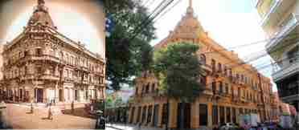

Built in the second half of the 19th century, the creation of this beautiful mansion is attributed to the Italian builder Carlos Pozzi.
Its original owner, the Spanish immigrant Don Juan Alegre, requested that this project fulfill a double function, on the upper floor would be his residence and on the ground floor he would establish his fashion and novelty house "El Paraíso" in 1903. In 1940, on the death of its owner, the Hotel Majestic was established on the top floor.
At the end of the 1940s, it was rented from the Paraguayan State to house the Ministry of Economy (created in 1933, today the Ministry of Finance).
As a result of the world crisis of 1929, many buildings remained in the hands of the Paraguayan State, such as this building (year 1950), which later became the Ministry of Finance, carrying out internal repairs. In 1965 maintenance tasks were carried out and the magnificent staircase was removed and replaced by elevators.
The former Palacio Alegre, today the headquarters of the Ministry of Finance, constitutes a testimony of the economic boom of Paraguay at the beginning of the last century.
From an architectural point of view, this urban mansion is considered to be of the Neoclassical style, a style that comes from Europe at the hands of professional Spanish, Italian, and other nationality architects and builders in general.
We can see at the top of the building an important and elegant dome with a circular base with a lantern (a tube arranged as a finish on the dome, which, through holes, allows lighting and ventilation of the interior space of the building). This dome was the fourth built in the capital of Asuncion after the domes of the National Oratory and Pantheon, that of the Paraguayan Administration of Alcohols (today CAPASA) and that of the Church of the Incarnation.
In 2014, work was carried out to recover the original decoration of the fresco (mural) found in the main entrance hall on Chile Street. It has reliefs made by the Catalan Jaime Miguel Moray. The Restoration technician, Francisco Garay Santos, explained about the work: "the restoration task involved the application of a technique of a reversible nature, which means that the recent work can be revised and updated according to new techniques and the technology that is used in this type of intervention"